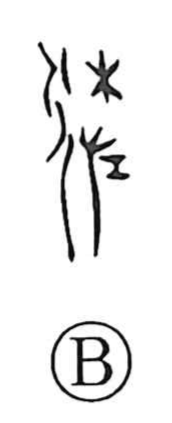

佐

Uncategorized
Kun: tasukeru | On: sa
to assist ・ assistant ・ aid
Explanation
Shirakawa explains 佐 as a phono-semantic character built on 左 as its sound element. In the old form, 左 shows the left hand holding a ritual curse implement, used to seek out the presence of the deities and appeal for their help; from this it carried the sense of aiding or assisting. To apply that meaning to human affairs, the person classifier was added to 左 to make 佐, shifting the focus from divine matters to support among people. Accordingly, 佐 came to mean assistance and is often seen in official titles and posts, as in hosa (assistant).